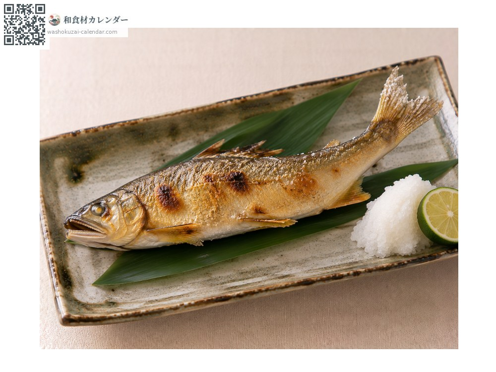
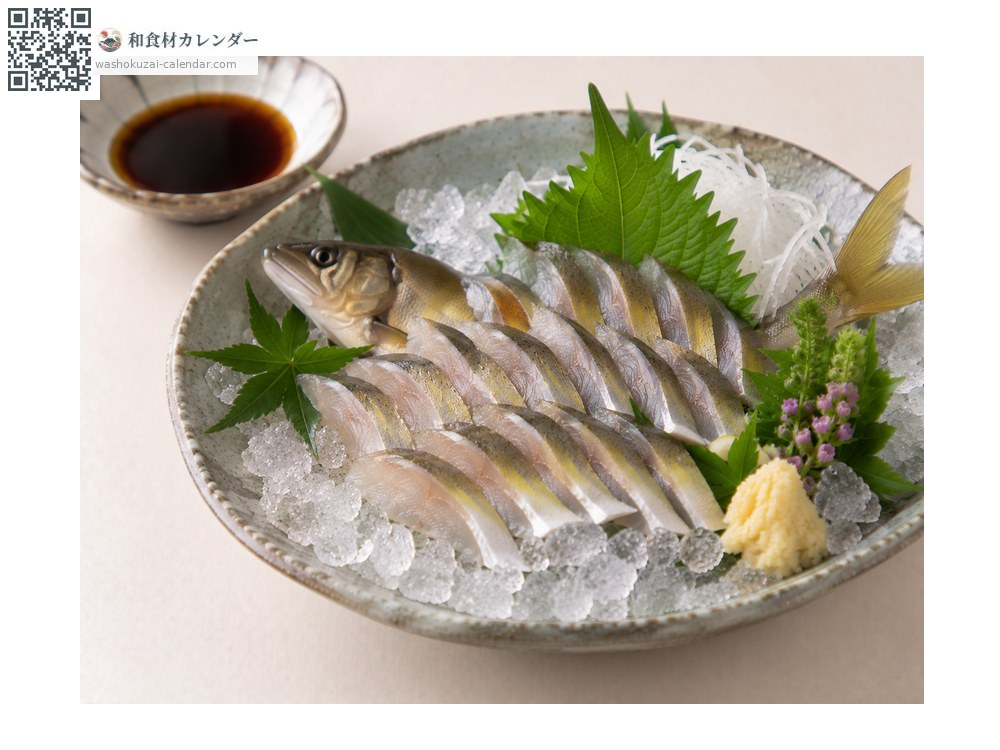
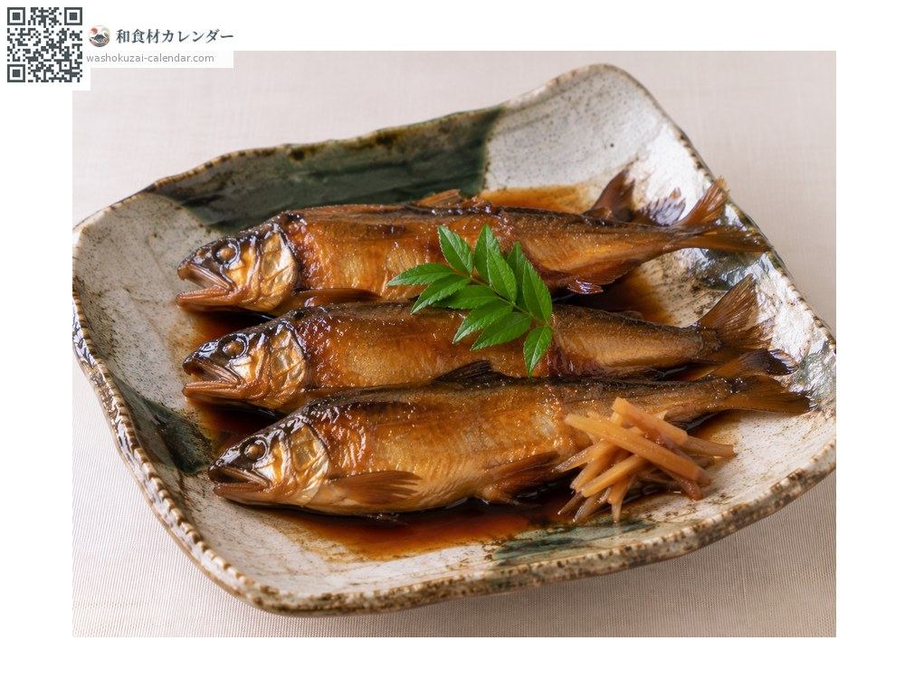
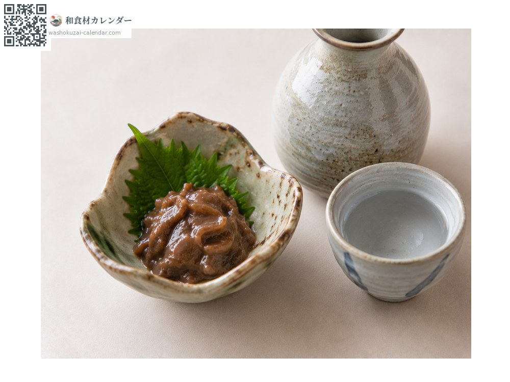

Seafood
Sweetfish
アユ あゆ ayu
Also known asayu
At its best in Jun, Jul, Aug

When it is at its best
Jan
Feb
Mar
Apr
May
Jun
Jul
Aug
Sep
Oct
Nov
Dec
In seasonAvailable
How to cook

Shioyaki (salt-grilled)
Skewered to look as if swimming. The bitter innards are part of it.

Segoshi (sliced crosswise through the bone)
Small fish sliced crosswise through the bone.

Kanroni (simmered in sweet soy syrup)
Simmered slowly until the bones soften.

Uruka (salted fermented sweetfish innards)
Salted innards. A drinker's delicacy.
How to choose
A firm body with clear yellow spots and a good aroma.
Storage
Spoils quickly, so eat the same day. Gut before freezing.
Main areas
Good to know
Also written as the fragrant fish; the scent comes from the river algae it eats. Roe-bearing fish moving downstream are called ochi-ayu and are prized.
At their best around the same time
 Japanese horse mackerel
Japanese horse mackerel White trevally
White trevally Japanese sardine
Japanese sardine Gizzard shad
Gizzard shad Greater amberjack
Greater amberjack Yellowfin tuna
Yellowfin tuna Flying fish
Flying fish Striped beakfish
Striped beakfish